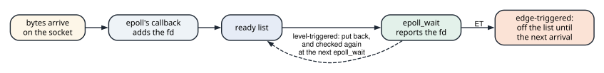

Edge-triggered epoll
This chapter covers
- Readiness semantics as a persistent level versus a state-transition edge, and their implementation on the
epollready list - Quantitative comparison of three socket handlers: single-read level-triggered, single-read edge-triggered, and drain-to-
EAGAINedge-triggered - The edge-triggered stall condition: unread kernel buffer data with no future readiness notification
- Write-readiness efficiency under
EPOLLETand bounded drain quotas to prevent single-connection starvation - Serializing per-socket dispatch across shared-instance worker threads with
EPOLLONESHOT - Mitigating the accept thundering herd across per-thread event loops with
EPOLLEXCLUSIVEandSO_REUSEPORT
An I/O multiplexer reports socket readiness under one of two semantic contracts: level-triggered notification, which reports a descriptor on every epoll_wait invocation while its readiness predicate remains true, or edge-triggered notification (EPOLLET), which reports a descriptor once per arrival transition. Edge-triggered mode reduces kernel re-evaluation overhead and permits persistent EPOLLOUT registration, but it imposes a strict non-blocking drain invariant: every handler must consume readiness until EAGAIN, or residual bytes remain stranded in the kernel receive buffer with no subsequent wakeup.
Because epoll is a Linux kernel subsystem, the accompanying epoll_edge benchmark runs inside a Linux container. It injects 10,000 bytes into a socket pair to measure exact event and byte counts across three handler designs, then verifies the concurrency guarantees of EPOLLONESHOT and EPOLLEXCLUSIVE.
25.1 Levels and edges
A socket satisfies the readable predicate whenever its kernel receive buffer contains at least one unread byte (or an EOF/error condition is pending). This predicate is a persistent state, or level: it remains asserted until read calls empty the buffer. The arrival of new bytes from the peer or network stack constitutes a state transition, or edge.
Level-triggered epoll reports the level: each call to epoll_wait returns the descriptor as long as unread bytes remain. Edge-triggered epoll reports only the edge: a single notification fires upon arrival, and no further event is delivered until additional bytes arrive.
This divergence arises directly from how the kernel maintains the epoll ready list introduced in Section 20.4 (Figure 25.1). When data arrives on a monitored socket, a kernel wait-queue callback enqueues the descriptor onto the epoll instance’s ready list. epoll_wait dequeues ready entries and copies them to user space. For a level-triggered entry, the kernel reinserts the descriptor onto the ready list before returning, causing the subsequent epoll_wait to re-poll the socket’s readiness predicate and report it again if unread bytes remain. For an edge-triggered entry, the kernel does not reinsert the descriptor; only a future arrival callback can enqueue it again.

The table below traces event delivery when 10,000 bytes arrive in a single burst and a handler reads at most 4,096 bytes per notification:
| Step | Bytes in the buffer | Level-triggered | Edge-triggered |
|---|---|---|---|
| 10,000 bytes arrive | 10,000 | event | event |
| handler reads 4,096 | 5,904 | event: still readable | nothing |
| handler reads 4,096 | 1,808 | event: still readable | n/a |
| handler reads 1,808 | 0 | nothing | n/a |
Under edge-triggered mode, 5,904 bytes remain unread in the receive buffer after the first event, yet the descriptor is absent from the ready list. If the peer is awaiting a protocol response to those 10,000 bytes before transmitting again, both endpoints block indefinitely in a classic liveness stall. Correctness under EPOLLET therefore requires a non-blocking socket drained in a loop until read returns EAGAIN, proving that the receive buffer is empty.
25.2 Three handlers, measured
The Linux epoll interface comprises three system calls and the epoll_event descriptor structure, which carries interest flags into epoll_ctl and triggered events out of epoll_wait:
struct epoll_event {
events: u32, // EPOLLIN, EPOLLOUT, EPOLLET, ... combined with |
u64: u64, // data the caller chooses; the program stores the fd
}
unsafe extern "C" {
fn epoll_create1(flags: c_int) -> c_int; // a new instance's fd; EPOLL_CLOEXEC
fn epoll_ctl(
epfd: c_int, // the instance
op: c_int, // EPOLL_CTL_ADD, EPOLL_CTL_MOD, or EPOLL_CTL_DEL
fd: c_int, // the descriptor to watch
event: *mut epoll_event, // its flags
) -> c_int; // 0, or -1 with errno set
fn epoll_wait(
epfd: c_int,
events: *mut epoll_event, // an array the kernel fills
maxevents: c_int, // its length
timeout: c_int, // milliseconds; -1 waits forever
) -> c_int; // how many entries were filled, or -1
}The Epoll wrapper owns the epoll file descriptor and closes it deterministically on drop:
#[cfg(target_os = "linux")]
mod linux {
use std::{
io::{self, Read, Write},
net::{TcpListener, TcpStream},
os::{
fd::{AsRawFd, FromRawFd, OwnedFd, RawFd},
unix::net::UnixStream,
},
sync::{Arc, Barrier},
thread,
time::Duration,
};
/// How long `epoll_wait` waits before the program decides no event is coming.
const QUIET_MS: i32 = 100;
/// An epoll instance. Closed when dropped.
pub struct Epoll(OwnedFd);
impl Epoll {
pub fn new() -> io::Result<Self> {
// SAFETY: epoll_create1 takes no pointers, and the result is checked.
let fd = unsafe { libc::epoll_create1(libc::EPOLL_CLOEXEC) };
if fd < 0 {
return Err(io::Error::last_os_error());
}
// SAFETY: the descriptor was just created, and nothing else owns it.
Ok(Self(unsafe { OwnedFd::from_raw_fd(fd) }))
}
fn control(&self, op: libc::c_int, fd: RawFd, flags: u32) -> io::Result<()> {
let mut event = libc::epoll_event {
events: flags,
u64: fd as u64,
};
// SAFETY: `event` is a valid epoll_event that outlives the call.
let result = unsafe { libc::epoll_ctl(self.0.as_raw_fd(), op, fd, &mut event) };
if result < 0 {
return Err(io::Error::last_os_error());
}
Ok(())
}
/// Add `fd` to the interest list.
pub fn add(&self, fd: RawFd, flags: u32) -> io::Result<()> {
self.control(libc::EPOLL_CTL_ADD, fd, flags)
}
/// Change the flags of `fd`. This also re-arms an `EPOLLONESHOT` descriptor.
pub fn modify(&self, fd: RawFd, flags: u32) -> io::Result<()> {
self.control(libc::EPOLL_CTL_MOD, fd, flags)
}
/// Wait up to `timeout_ms` and return the number of events.
pub fn wait(&self, timeout_ms: i32) -> io::Result<usize> {
let mut events = [libc::epoll_event { events: 0, u64: 0 }; 8];
// SAFETY: `events` is a writable buffer of 8 entries.
let ready =
unsafe { libc::epoll_wait(self.0.as_raw_fd(), events.as_mut_ptr(), 8, timeout_ms) };
if ready < 0 {
return Err(io::Error::last_os_error());
}
Ok(ready as usize)
}
}
// ...
}epoll_create1(EPOLL_CLOEXEC) allocates the instance with close-on-exec set atomically (Section 24.4). control populates an epoll_event with the requested flag bitmask and descriptor identifier before invoking epoll_ctl. Because each benchmark monitors a single descriptor, wait returns only the event count.
The two read handlers differ solely by the presence of the drain loop:
mod linux {
// ...
/// Read once, at most 4,096 bytes, and return how many arrived.
pub fn read_once(socket: &mut UnixStream) -> io::Result<usize> {
let mut buffer = [0; 4096];
socket.read(&mut buffer)
}
/// Read until the socket has nothing left (`EAGAIN`), and return the total.
pub fn read_until_eagain(socket: &mut UnixStream) -> io::Result<usize> {
let mut buffer = [0; 4096];
let mut total = 0;
loop {
match socket.read(&mut buffer) {
Ok(0) => return Ok(total),
Ok(read) => total += read,
Err(error) if error.kind() == io::ErrorKind::WouldBlock => return Ok(total),
Err(error) => return Err(error),
}
}
}
// ...
}read_once issues a single 4,096-byte read, whereas read_until_eagain loops until the non-blocking socket returns EAGAIN, surfaced in Rust as io::ErrorKind::WouldBlock.
run allocates a connected Unix domain socket pair, writes the 10,000-byte payload into one endpoint, and dispatches readiness events on the non-blocking peer until a 100 ms epoll_wait timeout expires:
mod linux {
// ...
/// Write `sent` bytes into one end of a socket pair. Then wait on the other
/// end with `flags`, and call `handler` once per event, until no event comes.
/// Returns the bytes `handler` read at each event.
pub fn run(
flags: u32,
sent: usize,
handler: fn(&mut UnixStream) -> io::Result<usize>,
) -> io::Result<Vec<usize>> {
let (mut writer, mut reader) = UnixStream::pair()?;
reader.set_nonblocking(true)?;
let epoll = Epoll::new()?;
epoll.add(reader.as_raw_fd(), flags)?;
writer.write_all(&vec![b'x'; sent])?;
let mut per_event = Vec::new();
while epoll.wait(QUIET_MS)? > 0 {
per_event.push(handler(&mut reader)?);
}
Ok(per_event)
}
// ...
}UnixStream::pair isolates kernel socket-buffer semantics from network timing jitter. Setting the reading endpoint to non-blocking mode satisfies the precondition for read_until_eagain, and parameterizing run by a function pointer allows identical harness execution across all three configurations.
Animation 25.1 visualizes the three runs side by side.
The container execution reproduces the analytical table from Section 25.1 exactly:
10000 bytes written into a socket; one handler call per epoll event
level-triggered, read once events 3, bytes per event [4096, 4096, 1808], left unread 0
edge-triggered, read once events 1, bytes per event [4096], left unread 5904
edge-triggered, to EAGAIN events 1, bytes per event [10000], left unread 0
Level-triggered single-read delivery required three epoll_wait cycles to drain all 10,000 bytes. Edge-triggered single-read delivery stalled with 5,904 bytes stranded in the kernel buffer, whereas draining to EAGAIN consumed all 10,000 bytes in a single event notification.
25.2.1 Why use edge-triggered mode
Edge-triggered notification eliminates redundant kernel work in two hot paths:
- Elimination of ready-list re-polling. Under level-triggered mode, every partially drained descriptor is reinserted onto the ready list and re-polled by the kernel on each
epoll_waitinvocation. UnderEPOLLET, each arrival transition produces exactly one notification. - Persistent
EPOLLOUTregistration. A TCP socket’s send buffer almost always has available capacity, meaning the socket is continuously writable. Under level-triggered mode (Section 20.4), an event loop must dynamically addEPOLLOUTviaepoll_ctlwhen a write blocks and remove it once flushed, otherwiseepoll_waitreturns immediately on every iteration in a busy spin. Under edge-triggered mode, the loop registersEPOLLIN | EPOLLOUT | EPOLLETonce at connection setup; a write-readiness edge fires only after awritereturnsEAGAINand the kernel subsequently drains space in the send buffer.
For these reasons, the mio I/O abstraction layer underlying the Tokio runtime registers Linux sockets in edge-triggered mode by default.
Unbounded draining to EAGAIN introduces a fairness hazard: a high-rate peer transmitting faster than the event loop can consume keeps the handler trapped inside its read loop, starving every other socket on the same thread. Production event loops therefore enforce a per-event byte quota (Figure 25.2). When a handler reaches its quota without observing EAGAIN, it yields the socket onto an internal user-space continuation queue, services the remaining ready descriptors from epoll_wait, and revisits the continuation queue on the next cycle. Tokio applies this same cooperative budgeting mechanism across asynchronous tasks, forcing a task to yield after consuming its per-poll work budget even when its socket remains readable.

25.3 Several threads on one epoll: EPOLLONESHOT
When a pool of worker threads invokes epoll_wait concurrently on a single shared epoll instance, edge-triggered mode permits a race condition that dispatches the same socket to two threads simultaneously:
- Data arrives on a socket; Thread A returns from
epoll_waitwith that descriptor and begins reading. - While Thread A is still servicing the socket, a second packet arrives, generating a new readiness edge and re-enqueuing the descriptor on the ready list.
- Thread B returns from
epoll_waitwith the identical descriptor and invokesreadconcurrently. The two threads interleave chunks of the same byte stream, corrupting framing and message ordering.
The EPOLLONESHOT flag prevents concurrent per-socket dispatch by atomically disabling the descriptor in the epoll interest list immediately after delivering a single event. The descriptor remains registered, but the kernel suppresses all subsequent notifications until the owning thread finishes processing and explicitly re-arms it with epoll_ctl(..., EPOLL_CTL_MOD, ...). Exclusivity is thereby guaranteed between event delivery and re-arming.
mod linux {
// ...
/// Events seen with `EPOLLONESHOT`: after the first write, after a second
/// write, and after re-arming the descriptor.
pub fn oneshot() -> io::Result<[usize; 3]> {
let (mut writer, mut reader) = UnixStream::pair()?;
reader.set_nonblocking(true)?;
let epoll = Epoll::new()?;
let flags = (libc::EPOLLIN | libc::EPOLLET | libc::EPOLLONESHOT) as u32;
epoll.add(reader.as_raw_fd(), flags)?;
writer.write_all(b"first")?;
let first = epoll.wait(QUIET_MS)?;
read_until_eagain(&mut reader)?;
writer.write_all(b"second")?;
let before_rearm = epoll.wait(QUIET_MS)?;
epoll.modify(reader.as_raw_fd(), flags)?;
let after_rearm = epoll.wait(QUIET_MS)?;
Ok([first, before_rearm, after_rearm])
}
// ...
}EPOLLONESHOT: first write 1 event, second write 0 events, after re-arming 1 event
The second write arrived while the descriptor was disarmed, causing epoll_wait to time out with zero events. Upon re-arming via EPOLL_CTL_MOD, the kernel detected the pending readable data and delivered the event immediately. Disarming a descriptor never discards incoming data; bytes remain buffered in the kernel receive queue until the descriptor is re-armed and drained.
25.4 Many waiters on one listener: EPOLLEXCLUSIVE
An alternative multithreaded server architecture assigns each worker thread a private epoll instance and registers the shared listening socket on every instance. When an incoming TCP connection completes the three-way handshake, the listener’s wait-queue callback notifies every registered epoll instance, waking all worker threads simultaneously. One thread succeeds in accept; the remaining threads receive EAGAIN and return to sleep. On a 64-core server, a single incoming connection triggers 64 thread wakeups and 63 wasted accept system calls, a contention pathology known as the thundering herd.
Introduced in Linux 4.5, EPOLLEXCLUSIVE (permitted only with EPOLL_CTL_ADD) registers an epoll instance as an exclusive waiter on the underlying file wait queue. When a connection arrives on the listener, the kernel wakes a single exclusive waiter (or a small bounded subset) rather than broadcasting to every sleeping thread (Figure 25.3).

EPOLLEXCLUSIVE.woken_by_one_connection spawns four worker threads, synchronizes their epoll_ctl registrations with a Barrier, initiates one client connection, and tallies how many threads return from epoll_wait:
mod linux {
// ...
/// Start `waiters` threads, each blocked in `epoll_wait` on its own epoll
/// instance that watches one shared listener. Connect one client, and
/// return how many threads woke.
pub fn woken_by_one_connection(waiters: usize, exclusive: bool) -> io::Result<usize> {
let listener = TcpListener::bind("127.0.0.1:0")?;
listener.set_nonblocking(true)?;
let fd = listener.as_raw_fd();
let flags = if exclusive {
(libc::EPOLLIN | libc::EPOLLEXCLUSIVE) as u32
} else {
libc::EPOLLIN as u32
};
let registered = Arc::new(Barrier::new(waiters + 1));
let threads: Vec<_> = (0..waiters)
.map(|_| {
let registered = Arc::clone(®istered);
thread::spawn(move || -> io::Result<bool> {
let epoll = Epoll::new()?;
epoll.add(fd, flags)?;
registered.wait();
Ok(epoll.wait(500)? > 0)
})
})
.collect();
registered.wait();
thread::sleep(Duration::from_millis(50));
let _client = TcpStream::connect(listener.local_addr()?)?;
let mut woken = 0;
for thread in threads {
if thread.join().expect("waiter thread")? {
woken += 1;
}
}
Ok(woken)
}
}The Barrier guarantees that all workers have registered the listener prior to client connection, and the 50 ms delay allows each worker to block inside epoll_wait before the SYN arrives.
4 threads wait on one listener, and one client connects:
without EPOLLEXCLUSIVE: 4 threads woke
with EPOLLEXCLUSIVE: 1 thread woke
An orthogonal kernel-level solution is SO_REUSEPORT: each worker thread opens an independent listening socket bound to the identical IP address and port with SO_REUSEPORT enabled prior to bind. The kernel hashes the incoming packet’s four-tuple to route each new connection directly to one listener’s accept queue. Because no two threads share a listening descriptor, cross-thread wakeup contention is eliminated entirely.
25.5 The complete program
Listing 25.1 Level- and edge-triggered handlers, EPOLLONESHOT, and EPOLLEXCLUSIVE. src/bin/epoll_edge.rs
//! Edge-triggered epoll: what it reports, and the handler it needs.
//!
//! Level-triggered epoll reports a socket for as long as it has data.
//! Edge-triggered epoll reports it once per arrival, so a handler that leaves
//! data behind never hears about it again. The program also shows
//! `EPOLLONESHOT`, which disables a descriptor after one event, and
//! `EPOLLEXCLUSIVE`, which wakes one waiter instead of all of them.
//!
//! Linux only. Run with: cargo run --bin epoll_edge
#[cfg(target_os = "linux")]
mod linux {
use std::{
io::{self, Read, Write},
net::{TcpListener, TcpStream},
os::{
fd::{AsRawFd, FromRawFd, OwnedFd, RawFd},
unix::net::UnixStream,
},
sync::{Arc, Barrier},
thread,
time::Duration,
};
/// How long `epoll_wait` waits before the program decides no event is coming.
const QUIET_MS: i32 = 100;
/// An epoll instance. Closed when dropped.
pub struct Epoll(OwnedFd);
impl Epoll {
pub fn new() -> io::Result<Self> {
// SAFETY: epoll_create1 takes no pointers, and the result is checked.
let fd = unsafe { libc::epoll_create1(libc::EPOLL_CLOEXEC) };
if fd < 0 {
return Err(io::Error::last_os_error());
}
// SAFETY: the descriptor was just created, and nothing else owns it.
Ok(Self(unsafe { OwnedFd::from_raw_fd(fd) }))
}
fn control(&self, op: libc::c_int, fd: RawFd, flags: u32) -> io::Result<()> {
let mut event = libc::epoll_event {
events: flags,
u64: fd as u64,
};
// SAFETY: `event` is a valid epoll_event that outlives the call.
let result = unsafe { libc::epoll_ctl(self.0.as_raw_fd(), op, fd, &mut event) };
if result < 0 {
return Err(io::Error::last_os_error());
}
Ok(())
}
/// Add `fd` to the interest list.
pub fn add(&self, fd: RawFd, flags: u32) -> io::Result<()> {
self.control(libc::EPOLL_CTL_ADD, fd, flags)
}
/// Change the flags of `fd`. This also re-arms an `EPOLLONESHOT` descriptor.
pub fn modify(&self, fd: RawFd, flags: u32) -> io::Result<()> {
self.control(libc::EPOLL_CTL_MOD, fd, flags)
}
/// Wait up to `timeout_ms` and return the number of events.
pub fn wait(&self, timeout_ms: i32) -> io::Result<usize> {
let mut events = [libc::epoll_event { events: 0, u64: 0 }; 8];
// SAFETY: `events` is a writable buffer of 8 entries.
let ready =
unsafe { libc::epoll_wait(self.0.as_raw_fd(), events.as_mut_ptr(), 8, timeout_ms) };
if ready < 0 {
return Err(io::Error::last_os_error());
}
Ok(ready as usize)
}
}
/// Read once, at most 4,096 bytes, and return how many arrived.
pub fn read_once(socket: &mut UnixStream) -> io::Result<usize> {
let mut buffer = [0; 4096];
socket.read(&mut buffer)
}
/// Read until the socket has nothing left (`EAGAIN`), and return the total.
pub fn read_until_eagain(socket: &mut UnixStream) -> io::Result<usize> {
let mut buffer = [0; 4096];
let mut total = 0;
loop {
match socket.read(&mut buffer) {
Ok(0) => return Ok(total),
Ok(read) => total += read,
Err(error) if error.kind() == io::ErrorKind::WouldBlock => return Ok(total),
Err(error) => return Err(error),
}
}
}
/// Write `sent` bytes into one end of a socket pair. Then wait on the other
/// end with `flags`, and call `handler` once per event, until no event comes.
/// Returns the bytes `handler` read at each event.
pub fn run(
flags: u32,
sent: usize,
handler: fn(&mut UnixStream) -> io::Result<usize>,
) -> io::Result<Vec<usize>> {
let (mut writer, mut reader) = UnixStream::pair()?;
reader.set_nonblocking(true)?;
let epoll = Epoll::new()?;
epoll.add(reader.as_raw_fd(), flags)?;
writer.write_all(&vec![b'x'; sent])?;
let mut per_event = Vec::new();
while epoll.wait(QUIET_MS)? > 0 {
per_event.push(handler(&mut reader)?);
}
Ok(per_event)
}
/// Events seen with `EPOLLONESHOT`: after the first write, after a second
/// write, and after re-arming the descriptor.
pub fn oneshot() -> io::Result<[usize; 3]> {
let (mut writer, mut reader) = UnixStream::pair()?;
reader.set_nonblocking(true)?;
let epoll = Epoll::new()?;
let flags = (libc::EPOLLIN | libc::EPOLLET | libc::EPOLLONESHOT) as u32;
epoll.add(reader.as_raw_fd(), flags)?;
writer.write_all(b"first")?;
let first = epoll.wait(QUIET_MS)?;
read_until_eagain(&mut reader)?;
writer.write_all(b"second")?;
let before_rearm = epoll.wait(QUIET_MS)?;
epoll.modify(reader.as_raw_fd(), flags)?;
let after_rearm = epoll.wait(QUIET_MS)?;
Ok([first, before_rearm, after_rearm])
}
/// Start `waiters` threads, each blocked in `epoll_wait` on its own epoll
/// instance that watches one shared listener. Connect one client, and
/// return how many threads woke.
pub fn woken_by_one_connection(waiters: usize, exclusive: bool) -> io::Result<usize> {
let listener = TcpListener::bind("127.0.0.1:0")?;
listener.set_nonblocking(true)?;
let fd = listener.as_raw_fd();
let flags = if exclusive {
(libc::EPOLLIN | libc::EPOLLEXCLUSIVE) as u32
} else {
libc::EPOLLIN as u32
};
let registered = Arc::new(Barrier::new(waiters + 1));
let threads: Vec<_> = (0..waiters)
.map(|_| {
let registered = Arc::clone(®istered);
thread::spawn(move || -> io::Result<bool> {
let epoll = Epoll::new()?;
epoll.add(fd, flags)?;
registered.wait();
Ok(epoll.wait(500)? > 0)
})
})
.collect();
registered.wait();
thread::sleep(Duration::from_millis(50));
let _client = TcpStream::connect(listener.local_addr()?)?;
let mut woken = 0;
for thread in threads {
if thread.join().expect("waiter thread")? {
woken += 1;
}
}
Ok(woken)
}
}
#[cfg(target_os = "linux")]
fn main() -> std::io::Result<()> {
use linux::{read_once, read_until_eagain, run};
const SENT: usize = 10_000;
let level = libc::EPOLLIN as u32;
let edge = (libc::EPOLLIN | libc::EPOLLET) as u32;
println!("{SENT} bytes written into a socket; one handler call per epoll event\n");
let runs = [
("level-triggered, read once ", run(level, SENT, read_once)?),
("edge-triggered, read once ", run(edge, SENT, read_once)?),
(
"edge-triggered, to EAGAIN ",
run(edge, SENT, read_until_eagain)?,
),
];
for (name, per_event) in runs {
let left = SENT - per_event.iter().sum::<usize>();
println!(
"{name} events {}, bytes per event {per_event:?}, left unread {left}",
per_event.len()
);
}
let [first, before, after] = linux::oneshot()?;
println!(
"\nEPOLLONESHOT: first write {first} event, second write {before} events, \
after re-arming {after} event"
);
println!("\n4 threads wait on one listener, and one client connects:");
println!(
" without EPOLLEXCLUSIVE: {} threads woke",
linux::woken_by_one_connection(4, false)?
);
println!(
" with EPOLLEXCLUSIVE: {} thread woke",
linux::woken_by_one_connection(4, true)?
);
Ok(())
}
#[cfg(not(target_os = "linux"))]
fn main() {
eprintln!("epoll_edge uses Linux epoll; run it on Linux");
}
#[cfg(all(test, target_os = "linux"))]
mod tests {
use super::linux::*;
const LEVEL: u32 = libc::EPOLLIN as u32;
const EDGE: u32 = (libc::EPOLLIN | libc::EPOLLET) as u32;
#[test]
fn level_triggered_reports_until_the_data_is_gone() {
assert_eq!(
run(LEVEL, 10_000, read_once).expect("run"),
[4096, 4096, 1808]
);
}
#[test]
fn edge_triggered_with_one_read_leaves_data_behind() {
assert_eq!(run(EDGE, 10_000, read_once).expect("run"), [4096]);
}
#[test]
fn edge_triggered_drained_to_eagain_reads_everything() {
assert_eq!(run(EDGE, 10_000, read_until_eagain).expect("run"), [10_000]);
}
#[test]
fn oneshot_waits_for_a_rearm() {
assert_eq!(oneshot().expect("oneshot"), [1, 0, 1]);
}
}$ cargo run --bin epoll_edge
10000 bytes written into a socket; one handler call per epoll event
level-triggered, read once events 3, bytes per event [4096, 4096, 1808], left unread 0
edge-triggered, read once events 1, bytes per event [4096], left unread 5904
edge-triggered, to EAGAIN events 1, bytes per event [10000], left unread 0
EPOLLONESHOT: first write 1 event, second write 0 events, after re-arming 1 event
4 threads wait on one listener, and one client connects:
without EPOLLEXCLUSIVE: 4 threads woke
with EPOLLEXCLUSIVE: 1 thread woke
25.6 Questions that come up
“A server under edge-triggered epoll sometimes stops answering one client, while CPU use is zero. What should be checked first?”
Audit every read and accept handler to confirm that it loops until EAGAIN (or re-enqueues the descriptor on an application-level continuation list when hitting a drain cap). Terminating a read handler after a fixed buffer fill leaves unread bytes stranded in the kernel receive buffer with no future edge event to trigger dispatch.
“Does edge-triggered mode apply to accept?”
Yes. If multiple connections arrive simultaneously in the listen backlog, an edge-triggered listener may fire a single EPOLLIN notification; the handler must therefore call accept in a loop until EAGAIN, matching accept_ready in Section 20.4.
“What happens to an edge-triggered socket when the peer closes it?”
Receiving a TCP FIN constitutes a readiness transition. epoll delivers EPOLLIN (along with EPOLLRDHUP if registered), and the subsequent drain loop consumes any remaining buffered bytes before observing read() == 0.
“Is kqueue edge-triggered?”
BSD and macOS kqueue supports both semantics per filter registration: EV_CLEAR resets the event state after delivery to provide edge-triggered behavior, and EV_DISPATCH disables the event after delivery to provide EPOLLONESHOT semantics.
“Why not have every thread call accept on one blocking listener?”
Modern Linux kernels use exclusive wakeups (WQ_FLAG_EXCLUSIVE) for threads blocked directly inside accept, waking only one thread per connection. The thundering herd re-emerges when multiple private epoll instances register the same listener, because each epoll instance attaches a non-exclusive wait-queue callback unless EPOLLEXCLUSIVE is specified.
Summary
- Socket readability is a persistent level (non-empty receive buffer); data arrival is a state-transition edge.
- Level-triggered
epollreinserts reported descriptors onto the ready list and re-polls them on everyepoll_wait. Edge-triggeredepoll(EPOLLET) delivers one event per arrival transition and does not re-notify until new bytes arrive. - Edge-triggered handlers must drain non-blocking sockets until
EAGAIN. Reading a single 4,096-byte chunk from a 10,000-byte arrival stranded 5,904 bytes unread with no subsequent notification. EPOLLETeliminates ready-list re-polling and allows persistentEPOLLOUTregistration, but requires per-event byte quotas and user-space continuation queues to prevent busy sockets from starving peers.EPOLLONESHOTdisarms a descriptor after a single event until re-armed viaEPOLL_CTL_MOD, enforcing single-thread ownership in shared-epollworker pools.EPOLLEXCLUSIVEsuppresses the accept thundering herd across per-threadepollinstances (waking 1 of 4 threads rather than all 4);SO_REUSEPORTeliminates shared listeners altogether by hashing connections across per-thread listening sockets.
Exercises
- Modify
runso that after the edge-triggered single-read stall completes, the writer injects one additional byte, and record the resulting event and byte counts. How many bytes doesread_oncereturn on the second event, and why? - Register
EPOLLOUT | EPOLLETon a socket inrunand count events while no writes occur. Fill the send buffer untilwritereturnsWouldBlock, drain bytes from the peer, and verify that a single writable edge fires. - Cap
read_until_eagainat 8,192 bytes per invocation and return a boolean indicating whether the cap was reached prior toEAGAIN. Implement a continuation queue in the event loop that services capped descriptors after processing eachepoll_waitbatch. - Execute
woken_by_one_connectionwith 16 worker threads and 10 sequential connections. Compare total thread wakeups with and withoutEPOLLEXCLUSIVE. - Reimplement
woken_by_one_connectionusingSO_REUSEPORT(via thesocket2crate beforebind) and measure how 10 incoming connections distribute across the worker threads.